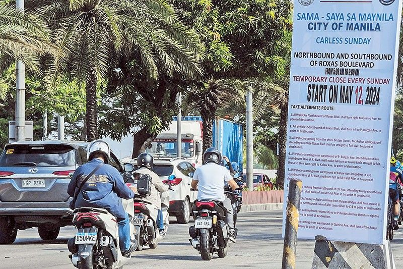

Jinggoy, ex-PDEA agent clash over 'convict' remark
From ABS-CBN News
Published May 13, 2024 04:06 PM PHT
Sen. Jinggoy Estrada. Senate PRIB/File
MANILA — Sen. Jinggoy Estrada and ex-Philippine Drug Enforcement Agency (PDEA) agent Jonathan Morales traded barbs Monday during a Senate panel hearing on the alleged leak of confidential documents on illegal drugs.
The Senate Committee on Public Order and Dangerous Drugs was about to preview a CCTV footage submitted by Morales, which showed his conversation with Department of Justice investigation agent Romeo Enriquez.
In that conversation, Enriquez had a certain "Eric Santiago" on speaker phone where he supposedly tried to stop Morales from testifying before the Senate.
Estrada then questioned Morales' cases.
"How can we be sure if the video that is going to be presented before the committee is totally unedited, knowing this person who has a lot of criminal records?" Estrada asked.
Morales appeared to have been insulted by Estrada's remark.
"Parang di naman po maganda yung sinasabi ni Sen. Jinggoy Estrada, parang ako naman talaga hinuhusgahan. Eh ako, may kaso pa lang at di pa napapatunayan sa hukuman, di kagaya po ng ating butihing senador ay na-convict na po. Wag naman po ganun," Morales said.
The Sandiganbayan earlier this year acquitted Estrada of plunder, but found him guilty of one count of direct bribery and 2 counts of indirect bribery over his involvement in the Priority Development Assistance Fund (PDAF) scam.
Estrada at that time said he was puzzled by the guilty verdict. He said that based on the information sheet, there were no charges of bribery or indirect bribery filed against him.
During Monday's hearing, the senator told Morales to back off and focus on his own cases.
"Alam mo, Mr. Morales, wag mo pakikialam yung kaso ko, problema ko yun. Yung kaso mo ang ayusin mo," Estrada said.
Committee chair Sen. Ronald dela Rosa then intervened.
"Please do not question Sen. Jinggoy dahil trabaho niya yan bilang senador at vice chairman ng commttee na magtatanong sa iyo... Insulting yan on the part of this committee hindi lang sa person ni Sen. Jinggoy pati ako sa as chairman para bang harap-harapan pinapahiya mo yung committee," Dela Rosa said.
"Sana wag tayo humantong sa personalan dito, mawawala tayo sa ating objective," he added.
Morales later apologized.
Sen. Francis Tolentino then moved to expunge those comments from the records, which the committee approved.
FAKE CONVO?
Meanwhile, Santiago admitted that he was in a phone conversation with Enriquez, which Morales heard.
But Santiago said he made up aspects of the conversation.
"Iyun po ay kathang-isip ko lang pasensiya na po kayo kaya nga po humingi ako ng tawad kay pareng Romy," Santiago said. "Hindi naman para sa lahat yun eh sa amin lang sana yun pero dahil po napunta ako dito dahil sa isang salita niya."
(I apologize, to Romy, I made it up. That was conversation was not for all. It was just meant for us but now I am here because of it.)
Committee Chair Senator Ronald dela Rosa called him out.
"Hindi naman kami Grade 1 dito; mga senador kami. Ibig mo sabihin binobola mo lang siya para mabola kami para imbitahin ka dito para makapagsalita ka ng something against kay Morales," Dela Rosa said.
(We are not kids. Do you mean to say you fooled them so you can get invited here?)
Dela Rosa then asked why he dropped the name of First Lady Liza Araneta-Marcos in the conversation. Santiago said it was so that he could be more believable to Enriquez and Morales as he believed anything he told Enriquez would end up with Morales.
"Si Romy kasi pag magti-trigger ko siya alam ko na makakarating kay Morales," Santiago said.
(I needed to trigger Romy so it can get to Morales.)
Santiago said he would like to present more documents but Dela Rosa asked him to submit these to the panel.

Manila LGU bringing back 'car-free Sundays'
this month
Read More

Sleepy far-flung towns in the Philippines will host US forces returning to counter China threats
Read More

House eyes parallel probe into Bamban Mayor Alice Guo
Read More